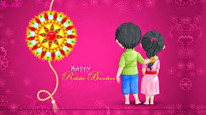

The day when a sister ties the sacred thread of Rakhi to his brother, this day is known as Raksha Bandhan. According to the Hindu month of shravana Raksha Bandhan is celebrated on full moon day.
The sacred thread of Rakhi is considered to be the chain which is stronger and ties the bond with trust and love.
Step 1
1) Raksha Bandhan is a Hindu festival celebrated in various parts of India.
2) Raksha Bandhan is celebrated on the last day of Shravan in the month of August.
3) Raksha Bandhan is symbol of bond, care and affection among the brothers and sisters.
4) On the day of Raksha Bandhan sisters prepare pooja thali with kumkum, diya, rice, sweet and Rakhi.
5) Sister ties Rakhi on brother�s wrist and applies �roli chawal� on his forehead.
6) On Raksha Bandhan festival sister prays to God for the well being of her brother.
7) Brother on Raksha Bandhan takes vow to protect his sister for life.
8) Exchange of sweets and gifts are also important customs of Raksha Bandhan festival.
9) Raksha Bandhan is also celebrated by preparing delicious dishes during the day time.
10) People specially ladies wear ethnic cloths to celebrate the occasion.
Step 2
1) Raksha Bandhan strengthens the bond between brothers and sisters.
2) Raksha Bandhan festival brings feeling of oneness and unity among the family members.
3) Raksha Bandhan festival spreads the message of peace and brotherhood in society.
4) Raksha Bandhan is also celebrated between cousin siblings and distant family members to express affection towards each other.
5) The practice of Raksha Bandhan celebration is being followed since ancient period and roots of it can be traced to several mythological stories in our scriptures.
Step 3
6) The famous folklore of Rani Karnavati of Chittor and Emperor Humayun emphasises the importance of Raksha Bandhan festival.
7) The Raksha Bandhan is secular, multicultural Hindu festival celebrated all across the nation.
8) The NRIs residing around the globe also celebrates Raksha Bandhan by expressing love towards their siblings.
9) On Raksha Bandhan festival women and girls tie rakhi to Prime Minister, President, Soldiers, and Social workers, voluntarily assuming them as their brothers.
10) Many of the sisters who are living away from their brothers send rakhi by post to celebrate this auspicious occasion.
Step 4
1) The festival of Rakshabandhan is a major festival celebrated in India.
2) The festival is a symbol of brotherly love, and many mythological, religious and historical stories are attached behind it.
3) On this festival, the sister ties a thread to her brother's wrist and wishes for his long life.
4) The brother then presents some gift to his sister and vows to protect her.
5) Even in the markets, the beauty of this festival starts to appear many days in advance.
6) Gifts and sweets shops adorned with colourful shades are decorated during this festival.
7) Sisters who are not with their brothers on the day of Rakhi send Rakhi to their brother either through post or online.
8) On Rakshabandhan an atmosphere of love and harmony is seen everywhere.
9) This festival not only enhances the mutual love and affection of the brothers and sisters, but also makes them realize their duties towards each other.
10) The importance of this festival is also mentioned in the scriptures and the epics.
Step 5
1) The festival of Raksha Bandhan is an ancient festival among Indian festivals.
2) This festival is a symbol of affection and sacred relationship between brothers and sisters.
3) The festival of Rakshabandhan is celebrated on the full moon day in the month of Shravan with joy and gaiety all over the country.
4) There is a very old tradition of tying rakhi on the day of Rakshabandhan.
5) Understanding the importance of Rakshasutra in history, even the big rulers like Sikandar and Humayun have put on a Rakhi.
6) On Rakshabandhan, the sisters tie a sacred thread i.e. Rakhi on the right wrist of the brothers and wish them good health and long life.
7) This festival is the identity of our culture and every Indian is proud of this festival.
8) It is celebrated with great pomp and show not only in India but also in Nepal and Mauritius.
9) Rakhi can range from inexpensive items like raw yarn to colourful arts, silk yarn, and expensive items like gold or silver.
10) The Rakshabandhan festival has been a cultural measure of social and family solidarity.
|